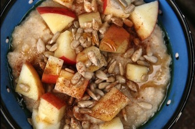

Ingredients:
4 cups water
1 1/2 cups oat bran (not oatmeal)
1 large apple - peeled/cored and chopped into very small pieces
1/3 cup raisins
1/2 teaspoon ground caraway seeds
1/2 teaspoon cinnamon
1/2 teaspoon salt
Soy milk for serving (optional)
Directions:
- In a 2 quarts sauce pan over high heat, bring the water to a boil. Stir in the oat bran and allow water to return to a
boil.
- Reduce heat to low and cook for two minutes - stirring often.
- After two minutes, turn off heat. Stir in the apple, raisins, and spices. Let stand until apple pieces soften - about 5
minutes - stirring occasionally.
- Divide hot cereal evenly among 4 bowls. Serve with the soy milk if desired.